Same MSI-Net architecture, two different weight sets. Stock was trained on
SALICON (natural photographs). Fine-tuned was trained on UEyes (1,980 UI
screenshots with real eye-tracking). The difference is purely which weights are loaded —
not a runtime parameter. Foveacast ships one .onnx and that's the model.
| Metric | Fine-tuned | Stock | Delta |
|---|---|---|---|
| CC (higher better) | 0.7068 | 0.4934 | +43% |
| KLD (lower better) | 0.6574 | 1.1682 | −44% |
| NSS (higher better) | 2.2879 | 1.5776 | +45% |
The ACS (American Community Survey) welcome page is one of the two screenshots in the Foveacast comparison set that has UEyes ground truth. Look at where the ground truth shows real users looked (the "Begin" button, the header, the sidebar navigation) and whether the fine-tuned model picks those up while the stock model doesn't.
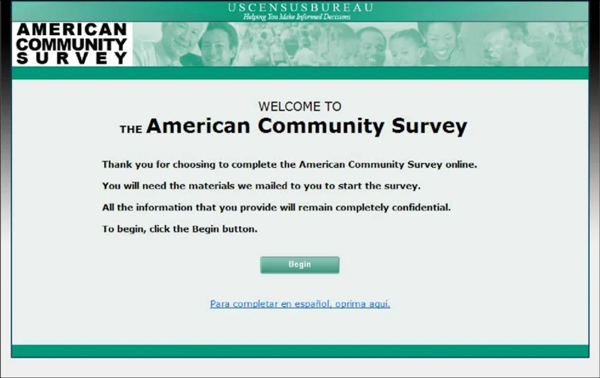
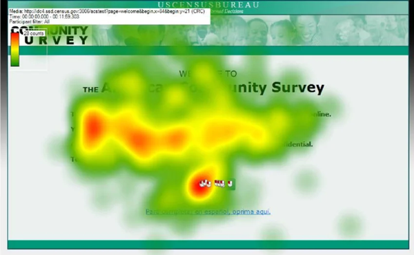
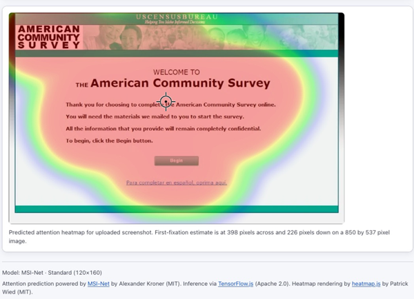
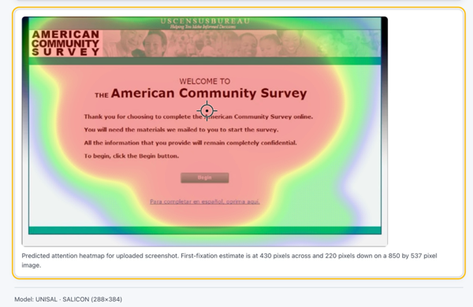
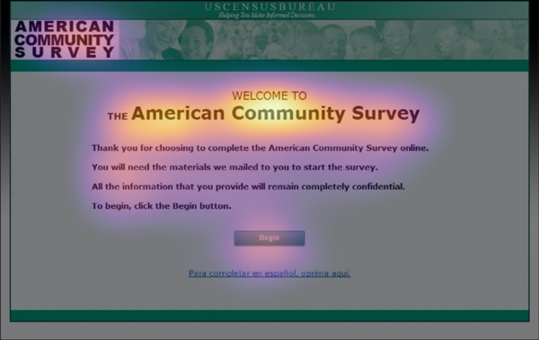
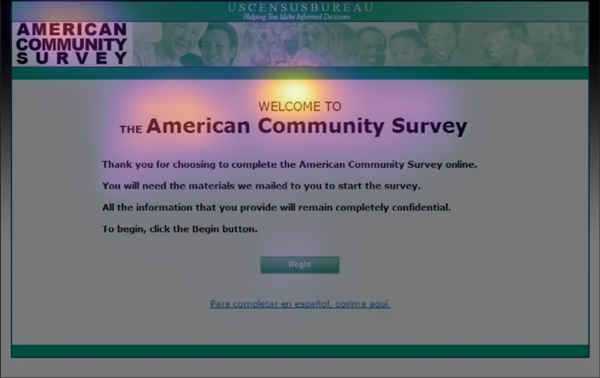
Four images from the held-out UEyes test split (never seen during training), one per UI category. For each: compare the ground truth (where real users actually looked) to the stock prediction (centrality-biased) and the fine-tuned prediction (UI-aware). The question is whether the fine-tuned model's hotspots land on UI elements (buttons, menus, content blocks) rather than just the geometric centre.
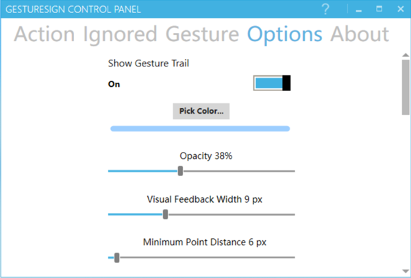
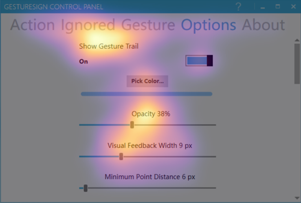
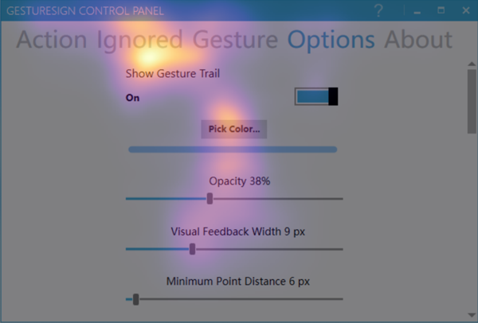
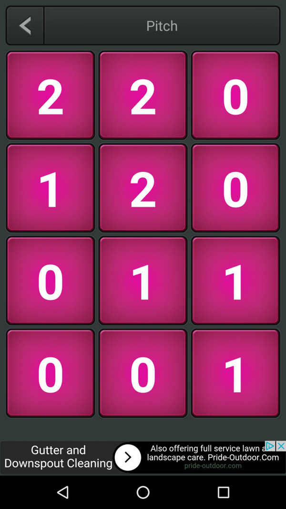
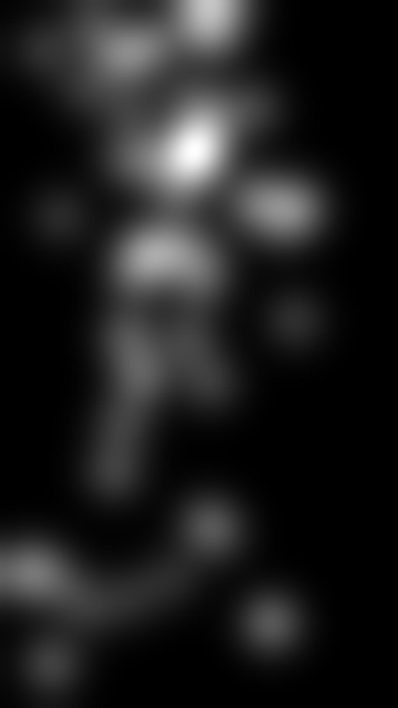
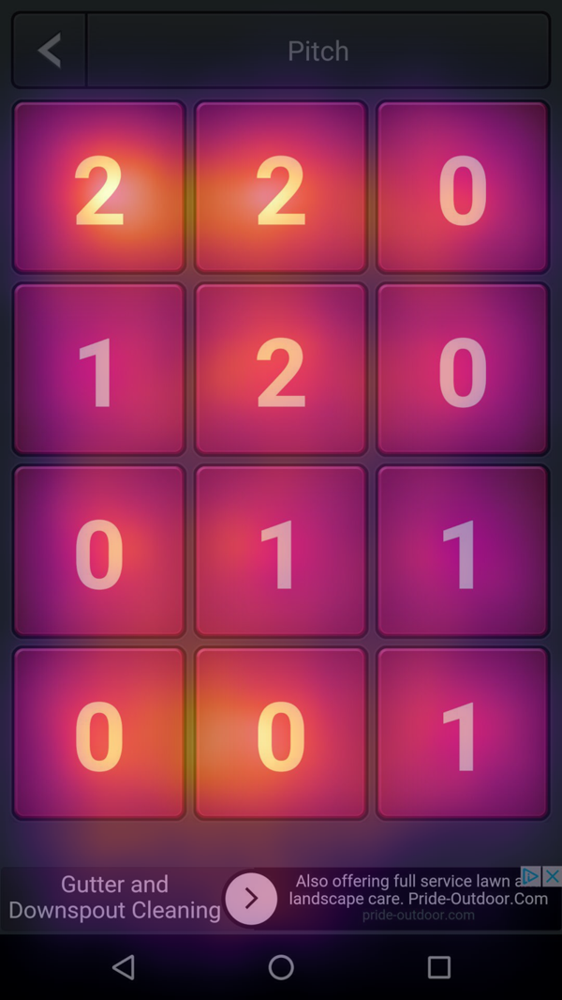
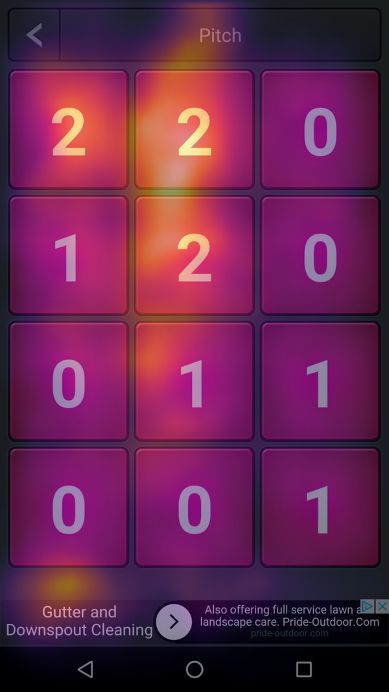
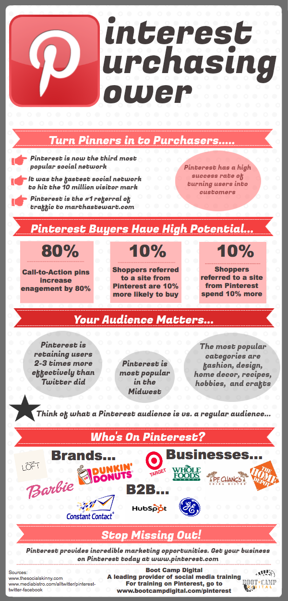
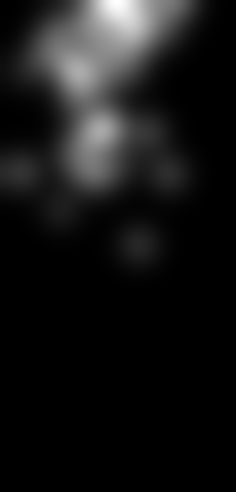
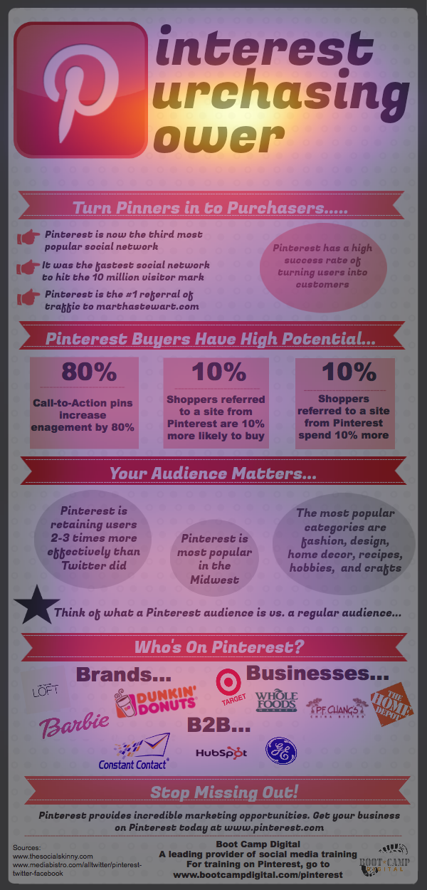
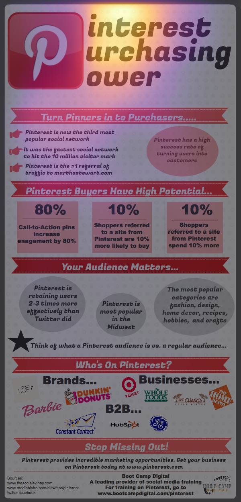
Generated by foveacast-training Phase 7 (scripts/render_saliency.py). Heatmap colormap: inferno @ 50% alpha. Ground truth from UEyes (Jiang et al. 2023, CC BY 4.0).